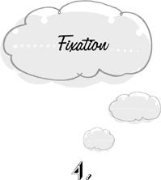

{% include JB/setup %}
{% raw %}
<div>

<h1 id="filepos50742" class="calibre19"><span class="calibre20"><span class="bold"><a class="calibre21"></a><a class="calibre21"></a></span></span></h1><div class="calibre16"> </div>
<p class="calibre22">                 <a class="calibre23"></a><a class="calibre23"></a>n <em class="calibre9">fixation</em>, our progress toward the goal is blocked. We can proceed no further until we receive a telephone call, an authorization, a shipment of materials, a new inspiration. But instead of turning to other affairs, we remain immobilized until we can get going once again on the same project. In short, we wait.</p>
<p class="calibre22">In preparation for an eight o’clock gathering at our house, we’ve cleaned and tidied up, bathed, dressed, laid out the food and drink. Everything is in readiness. But it’s only seven-thirty. Now what do we do until the guests arrive? We <em class="calibre9">could</em> use the empty interval of time to take care of small chores that will have to be done sooner or later anyway. Or we could indulge in a small pleasure. But we don’t <em class="calibre9">experience</em> the time before us as empty. It seems to us that we’re already occupied: we’re throwing a party. It’s true that there’s nothing for us to <em class="calibre9">do</em> about this enterprise at the moment, but we manage to keep ourselves busy with it all the same. Like windup soldiers that march in place when they bump into a wall, <a class="calibre23"></a>we continue to attend to our project even when it doesn’t call for our attention. We busy ourselves with the peculiar round of activities collectively known as “waiting for” the guests to arrive. We visualize their arrival. We wish they were already here. We observe the movements of the hands on the clock, literally marking time until we can swing into action again.</p>
<p class="calibre22">Fixation may be conceived of as a limiting case of amplification. When we amplify, the work left to do accomplishes so little that it isn’t worth the effort; yet we go on. When we fixate, there is, at least for the moment, <em class="calibre9">nothing</em> left to do. And still we go on. In order to accomplish the apparently impossible task of keeping busy when there’s nothing to do, we invent completely useless activities that have <em class="calibre9">reference</em> to the goal, although they don’t advance us toward it in the least.</p>
<p class="calibre25">It scarcely needs to be pointed out that fixation is a waste of time. Indeed, the colloquial name for fixation is “killing time.” This felony is routinely committed when further progress depends on a change of circumstances that we can’t ourselves bring about—when we have to wait for the guests to arrive, the checkout line at the grocery store <a class="calibre23"></a>to move, the traffic to unsnarl, the five o’clock whistle or the three o’clock school bell to signal an end to our incarceration.</p>
<p class="calibre22">In circumstances like these, we stare at clocks, count to ourselves, twiddle our thumbs, gaze about randomly without letting ourselves get interested in what we see, complain about our plight, and spend time wishing that the period of waiting were over. These activities sustain the illusion that we’re still laboring at the stalled enterprise. Our clock-watching is felt magically to keep time moving, and the force of our complaints and wishes seems to push the checkout line along.</p>
<p class="calibre22">Another way to keep busy when there’s nothing to do is by repeating what’s already been done. The host waiting for his guests to arrive will double-check and triple-check his preparations. We’ve already encountered repetition as a form of amplification. The behavior is the same; but it’s even more senseless in the context of fixation. When repetition is amplificatory, we at least expect to obtain a greater degree of certainty that the job has been properly done. But the fixated host entertains no doubts about the adequacy of his preparations. He double-checks and triple-checks simply to kill time.</p>
<p class="calibre22"><a class="calibre23"></a>If the repetitions, the wishings, and the complainings begin to run thin, we may be privileged to observe the last refinement of fixation: the state of <em class="calibre9">suspension.</em> Having exhausted every device for keeping busy when there’s nothing to do, we still don’t tear ourselves away. Instead we sit vacantly, benumbed, in a state of mental paralysis. But this vacancy isn’t simply an absence of thought. Paradoxically, the suspended mind is both empty of content and fully occupied. We feel the strain of mental exertion. We are busy. Yet if asked to describe what we are doing, we have nothing to say.</p>
<p class="calibre22">When we can’t do anything useful to advance our aim, we would do better to forget about it and turn to something else—even if the aim is enormously important and the alternative is just barely worth a glance. Any amount of value is preferable to merely killing time. Until we’re in a position to do something constructive about saving the world from a nuclear holocaust, let’s have a cup of tea. When we’re standing in line, we can observe the other people or enjoy a private fantasy. When we’re stuck in traffic, we can do isometric exercises. Periods of enforced waiting are often precious opportunities to <a class="calibre23"></a>indulge in the little pleasures of life for which we can’t make a special time in our busy day. Here at last is a chance to take a leisurely bath or an aimless stroll, to throw sticks for a dog, to discuss philosophy with a child, to interpret the shapes of clouds. In fixation, we throw away the gift of an empty moment.</p>
<p class="calibre22">The alternatives to killing time are sometimes limited by the circumstances in which we have to wait. We can’t observe the clouds from a windowless waiting room. But one option that’s always open to us is to not do anything at all. This at least conserves our energies for the time when we’re once again called into action. When there’s nothing to do, it’s a waste of electricity to keep the mind running. Here at last is a chance to take a break from the incessant mental chattering—the planning, the scheming, the hypothesizing, the evaluating—that modern life seems to require of us.</p>
<p class="calibre22">Of course, not doing anything has to be distinguished from the contentless mental activity of suspension. The latter exhausts us; the former rejuvenates. When the mind is empty, awareness flows effortlessly with the endless changes offered up for our delight by a bounteous universe. Not <a class="calibre23"></a>even a waiting room can shut them out: a stain on the ceiling that may be seen as Cleopatra on her royal barge, an exquisitely ugly wallpaper, a rhythm of hurried footsteps in the hall, the cool leather of the armchair, an inner vision of deities and fabulous beasts … The quieter we are, the more we see. When we’re suspended, however, we aren’t so easily captivated by the passing scene. We’re too busy waiting.</p>
<p class="calibre22">The obstacle that makes us fixate may be internal as well as external. We may simply not know what to do next. We try to decide whether a marginal friend should be invited to our party, or whether to eat Chinese food or Italian. We go through whatever procedures are deemed appropriate for decisions of this sort—weighing the benefits against the costs, praying to God for guidance, consulting the entrails of a sheep. And the data prove to be insufficient for settling the issue—the costs exactly counterbalance the benefits, God tells us to decide for ourselves, the entrails are ambiguous. So we complain, we wish, and we repeat. Eventually we fall into a state of suspension. We sit and stare vacantly at the problem, or try to conjure a solution by chanting its name. Chow mein, lasagna. Lasagna, chow mein.</p>
<p class="calibre22"><a class="calibre23"></a>What can we do in a situation like this? If the decision isn’t pressing, it should simply be set aside for the time being. Perhaps we’ll receive new information that will help us to make up our mind. Perhaps we’ll hit upon a new decision-making procedure. Fixating on the problem doesn’t invite either of these developments, however. On the contrary, it diminishes the chance of encountering new experiences that may lead us out of our impasse. We’re more likely to break through to a solution if we go to bed and dream.</p>
<p class="calibre22">Fixation is senseless even if we can’t postpone our deliberations. If we must decide now, it’s better to be arbitrary than to sit and stare. If we can’t answer a question on an exam, we should guess. Of course the arbitrary decision may be wrong. But abiding in the trap of fixation doesn’t decrease this risk at all. So let’s stop wasting time and turn to the decision-making procedure that never fails to give a definite result: let’s flip a coin.</p>
<p class="calibre25">The most troublesome variety of fixation is undoubtedly <em class="calibre9">worrying.</em> To worry is to think unproductively about a potential misfortune that we’re powerless to affect. We lose a briefcase on the bus and must wait until morning before we <a class="calibre23"></a>can visit the lost and found. Meanwhile, there’s absolutely nothing we can do. Yet our thoughts return to the issue again and again. We “wonder” whether the briefcase will be found. We “hope” that it will be found. We “wish” we hadn’t lost it.</p>
<p class="calibre22">We’ve all heard it a thousand times before: it’s no use worrying. Worry does nothing except make us miserable. Unlike so many other traps, this one is widely recognized for what it is—when someone else is the victim. When we are the worriers, however, it doesn’t seem nearly so obvious that our activity is pointless and stupid. Without really being aware of it, we have the superstitious feeling that problems will automatically get worse unless we keep them in the forefront of consciousness. Every potential misfortune is seen as a willful adversary who is waiting to stab us as soon as our back is turned. Or perhaps we have to suffer now to placate bloodthirsty gods. In any case, it feels unaccountably <em class="calibre9">daring</em> not to worry.</p>
<p class="calibre22">The moments squandered in merely waiting—for the bell to ring, the show to start, the good or the bad news to arrive, the bus to come, the traffic to move, the tedious speech to end— add up to a considerable fraction of life. But quite aside from these transitory episodes, we may also <a class="calibre23"></a>be afflicted with an attitude of <em class="calibre9">extended fixation</em> for days or weeks at a time. We cease to do useful work as summer vacation draws near, and we stop enjoying our vacation well before the time of our return. The shadow of the next stage has already fallen on us and we are paralyzed by waiting. It’s fixating on Monday that makes it more difficult to enjoy Sunday than Friday night.</p>
<p class="calibre22">The awaited event may even be lost in the mist of the most distant future. While we wait for our ship to come in or our prince to take us away, we remain day after day in the same limbo as the host whose guests have not yet arrived. We don’t let ourselves be wholly captivated by anything in the present, because the present doesn’t really count. It’s no more than a preliminary attraction, something to pass the time until the real show begins. When we have our degree, when the children are grown, when we come into our inheritance, when we retire, when all the onerous chores and duties that keep us from our heart’s desire are finally out of the way and everything is settled—then we will begin to live. But there’s a long stretch of time to be killed before the golden moment arrives. Meanwhile, we are restless and impatient from morning to night.</p>
<p class="calibre22"><a class="calibre23"></a>While we wait for the real show to begin, the whole of life may pass us by like an insubstantial dream. Our work is never our vocation. Our pleasures are only makeshift. Relationships are just for the time being. Everything we do is a species of thumb twiddling. We may not even know what we’re waiting for. In the trap of <em class="calibre9">empty fixation</em>, we look forward impatiently to a fate that we can’t even name. We don’t know what we will be when we grow up, and we never grow up. We’re certain only that we haven’t yet become who we really are.</p>
<p class="calibre22">But we need never wait to <em class="calibre9">become</em> who we are. We are ourselves already, and this is already our life. A prince isn’t merely a future king, a little girl isn’t just a woman-to-be. Princes, children, students, apprentices, unpublished authors, struggling artists, and junior executives are already something definite and complete. The maximum of life’s joys and sorrows is already open to them.</p>
<p class="calibre22">A great irony is hidden in extended fixation. When we finally become what we’ve waited so long to be, we’re liable to be overwhelmed with nostalgia for the good old days. A struggling young actor once gave his wife a bunch of grapes <a class="calibre23"></a>on their anniversary, wishing that they were pearls. Years later, having become a great success, he gave her a string of pearls and wished that they were grapes.</p>
<p class="calibre22">There are no preliminaries to living. It starts now.</p>  <div class="mbppagebreak" id="calibre_pb_12"></div></div>

{% endraw %}

